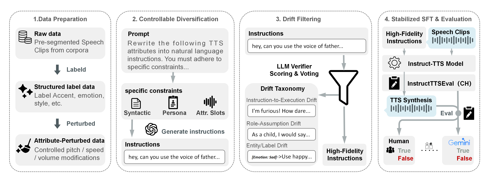

Paper Summary
Instruct-TTS systems commonly expand structured style labels into natural-language training instructions through LLM rewriting, yet we find that over 40% of unconstrained rewrites contain semantic drift that corrupts supervision signals and weakens generalization. We formalize this problem as instruction supervision instability and propose a data-centric stabilization recipe that jointly improves coverage and fidelity through three complementary mechanisms: controllable instruction diversification for systematic linguistic expansion, LLM-based drift filtering for semantic quality assurance, and attribute-aligned supervision that grounds prosody control in parameterized acoustic perturbations. On the Chinese split of InstructTTSEval, our recipe raises average instruction-following accuracy from 34.5% without fine-tuning and 51.0% with naive fine-tuning to 56.4%, while constrained rewriting reduces drift from 40.4% to 15.4%. Ablations confirm all three mechanisms are complementary, and the drift taxonomy may extend to instruction-driven generation beyond TTS.
Method Overview

Figure 1: Overview of the proposed stabilization recipe for Instruct-TTS instruction supervision.
Citation
@inproceedings{geng2026stabilizing,
title = {Stabilizing Instruction Supervision for Instruct-TTS via Controllable Diversification and Drift Filtering},
author = {Geng, Yizhong and Mao, Kecan and Li, Qifei and Wang, Cong and Gao, Yingming and Wang, Ruimin and Wang, Chunfeng and Li, Hao and Li, Ya},
booktitle = {Proceedings of Interspeech 2026},
year = {2026}
}